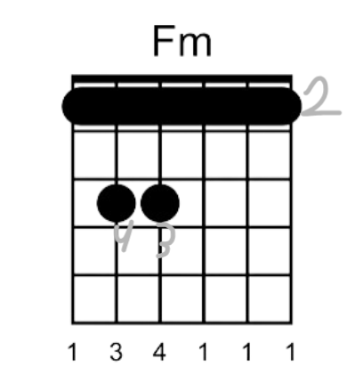
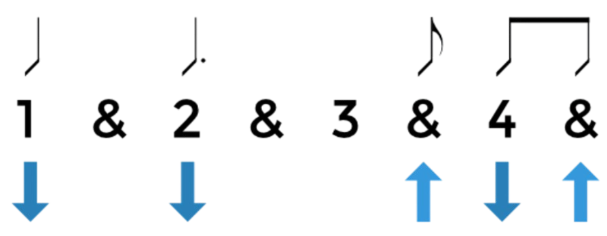

Teknikker

Skaler er brukt for solo spill og for rytme i en sang. Du utfører det ved å spille ett streng om gangen i en bestemnt rekkefølge.
Den beste måten å lære skaler er å bare øve om og om igjen. Prøv å varier hastighet og fokuset ditt for bedre læring.

Barre-akkorder involverer å ta en finger over flere strenger. En barre-akkord består av at alle streng er presset ned på. Teknikken tar ikke bare styrke, det er også riktig teknikk og mye øving som er viktig.
Press på med klimprehånden (dominante hånden) din mens du holder på med en barre-akkord, det hjelper med å få klar lyd. Pass på innrykkende i fingerne.

Avansert strømming handler om presision og konsistens. Du må ofte variere dine strømmer og/eller treffe spesifikke streng.
Prøv å si strømmingmønstret ut høyt mens du spiller. Dette hjelper hjernen din å prosessere bevegelsen.